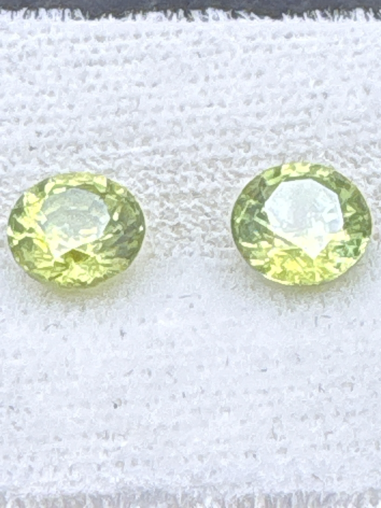

The Gem Drawer › No. 52

Two yellowish-green rounds of a specialty gem with more fire than diamond.
| Catalogue no. | #52 |
|---|---|
| As labeled | Green Sphene / Titanite (PAIR - 2 stones in this box, see notes) |
| Shape / cut | Round |
| Weight | 1.5 ct |
| Measurements | 7mm round (each, presumed) |
| Colour | Yellowish-green |
| Clarity / condition | Not recorded |